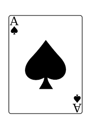

Majestat Gości 
Jubilanci:
Kacper K. - Zawsze kreatywny, wykazujący sie pełnym zaangażowaniem w każdej ważnej sytuacji, ekscentryk, mający ogromne ambicje, trudno znaleźć u niego cel, którego nie zdołałby osiagnąć, ma charakterystyczny gust, posiada niezwykłą zdolność do wypowiadania się na każdy temat i niepodporządkowywania się konwenansom, a wszystko to dopełnia umiejętność płynnego wybrnięcia z każdej sytuacji, poza tym "przezabawny" i towarzyski, jeśli musi dogada się z każdym.
Maja W. - Mały człowiek z wolą smoka, empatyczna, sumienna, kochająca kawę, pracocholiczka, przedsiębiorcza i analizująca zadania jak maszyna, oraz najważniejsze, paradoksalnie to najbardziej ludzka osoba jaką możesz poznać.
Goście:
Aleksandra C. - Tennisistka o dużym sercu, eksperymentuje z kolorami na głowie, wykluwająca się artystyczna dusza, wszędzie znajdzie powód do śmiechu, interesuje się tworzeniem grafik komputerowych, przygarnie każdego kota.
Filip M. - Prawie dwumetrowe bydle, doświadczony boxer, sexista i rasista, ale tylko w żartach, have no bitches i w jego przypadku to dobry żart, posiada prawo jazdy i wiele parateorii o życiu.
Rafał M. - Strateg, logistyk i filozof, szeroka wiedza dotycząca historii, wojen i polityki, ustalone cele, ambicje i marzenia, łatwo go zdenerwować, zaś każda dyskusja z nim jest ciekawa.
Adrian K. - Mełgiewianin, pożałowania godne marzenia o mełgwi jako metropolii, dosłownie NPC, zawsze się uśmiecha, nie ma wlasnego zdania. Dobry z niego człowiek i piłkarz.
Amelia P. - Manifestacje, kamienie każdego rodzaju, paznokcie i kino to dla niej tematy zgłębione i ciekawe, nie wiadomo skąd miała czas na te wszystkie filmy i seriale.
Andżelika P. - Szczęśliwa, dobra, pomocna i zabawna osoba, z pewnością odnajdzie się w każdym towarzystwie, szczery człowiek, imo ma zajebiste włosy.
Klaudia K. - Wspaniałomyślna, życzliwa, cicha osoba, nie lubi skupiać na sobie uwagi, jednak świetnie się odnajduje w roli osoby, która spaja ludzi z różnymi charakterami, czyta szybko i dużo książek.
Piotr O. - Bijatyk, ambiwalenty dżentelmen, romantyczny jak zasłona, uliczniak i kasjer oraz prawdziwa księżniczka.
Narina M. - Przewodnicząca, szczera typiara, based, nie bawi się w chuje muje i odrazu ci powie co myśli, prawie Armenka, ale nie z plemienia czipandi tylko z Polski.
Martyna C. - Lubi gotować, możesz ją kojarzyć przez znajomych znajomych, uczestniczka zepsutej maskarady zza obiektywu, będzie dobrze.
Zuzanna L. - Zawsze wie co powiedzieć, inspirująca w wielu kwestiach, potrafi wszystko gdy tylko chce, a naprawdę wiele może, nietypowa kobieta.
Wiktoria K. - Mistrzyni jazdy konnej, karmi głodnych, zabiera bogatym, przez długi czas nosiła abażur, ma kostium shreka w domu.
Krzysztof K. - Spokojny, racjonalny, posiadający przenikliwe spojrzenie, wie o tobie wszystko co powinien zanim zdążysz coś powiedzieć, również posiadł wiedzę historii i polityki, co czyni go bardziej bezwzględnym w działaniach.
Wiktor W. - Zaś charyzma tego pana, sponiewala XD, fuck boy z bronxu i firleja, dobry pływak i przyjaciel, życiem styrany lecz nadal zabawny, znana osobistość.
Jagoda P. - Fortepianistka, kujon, osoba do rany przyłóż, nigdy nie odmówi pomocy, hobbystycznie grająca w piłkę nożną i oglądająca anime.
Julia S. - Zawsze perfekcyjnie ubrana, chce ciągle zdobywać nowe umiejętności, wyrozumiała, elastyczna, poradzi sobie w każdej sytuacji.
Marta K. - Towarzyskie poczucie humoru, lubi się zabawić, jednak jakimś cudem w szkole radzi sobie świetnie, a jej wspaniały styl sprawia, że ciągle ocieka dripem.
Julia N. - Mistrzyni niezapowiedzianych wizyt, odważna i wygadana, chodzi na siłownię, ostatnio całkowicie zatraciła się w czytaniu książek, sama pracuje też nad własną.
Adrian J. - Pokorny, wojownik, sportowiec, mors, nie raz kontuzjowany, zdrowy i silny chłop, nada się na roboty, jest wdzięcznym, życzliwym i zaradnym człowiekiem.
Mateusz Ż. - Ciekawy przypadek, wymykający się schematom i stereotypom, generator rozkmin, pozytywny bohater każdej opowieści, nie da się go nie polubić, obiecujące uosobienie przeznaczenia, wiele czasu spędził na siłowni i trochę na oglądaniu anime.